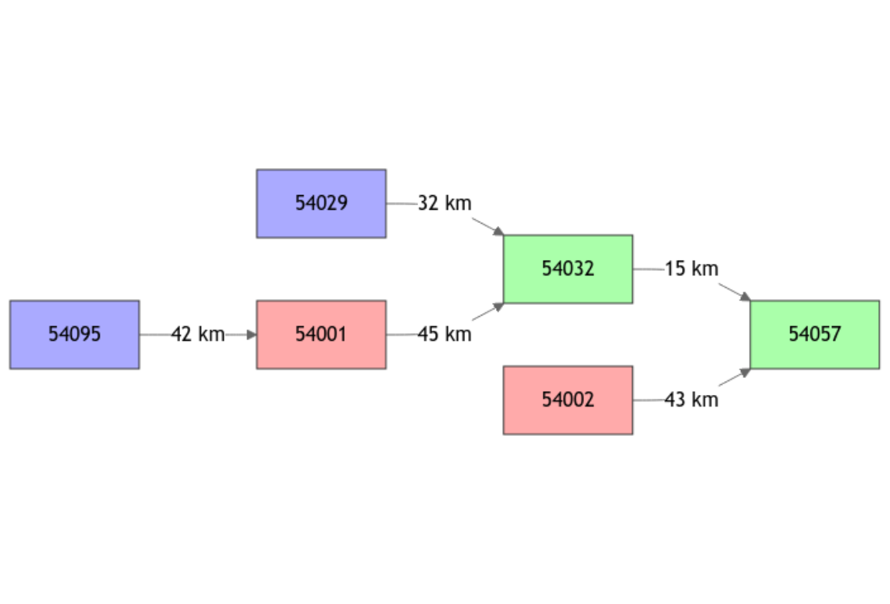
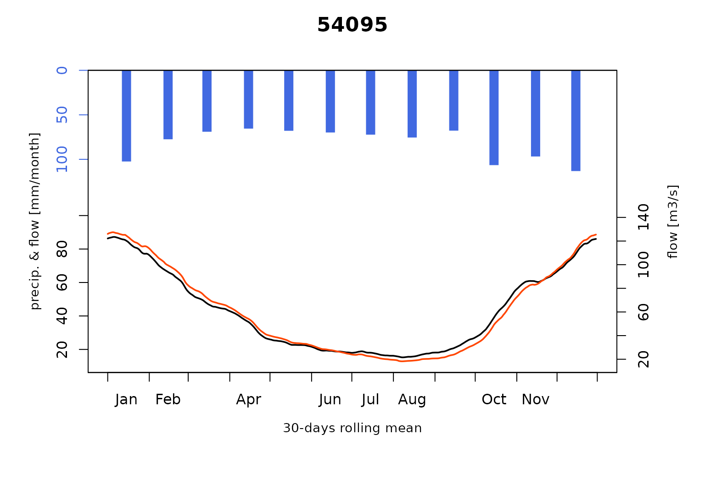
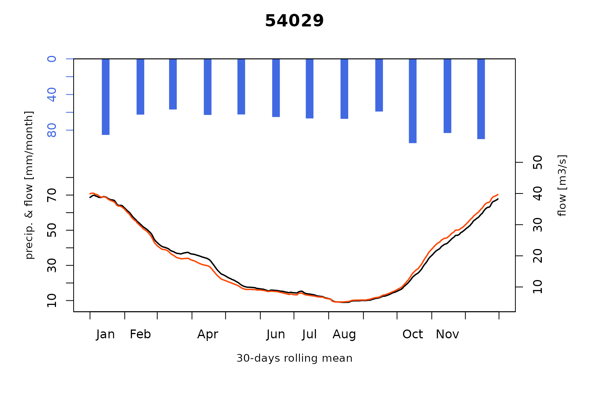
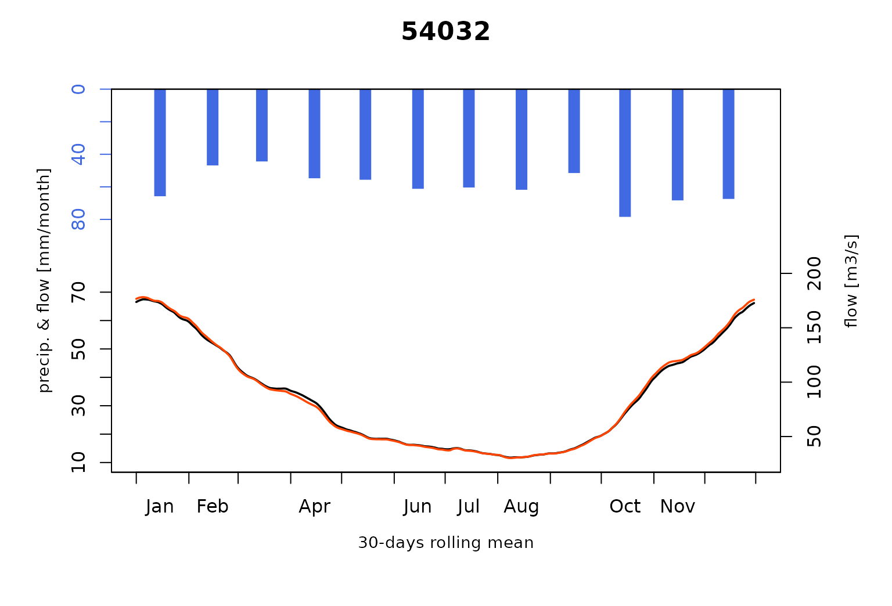
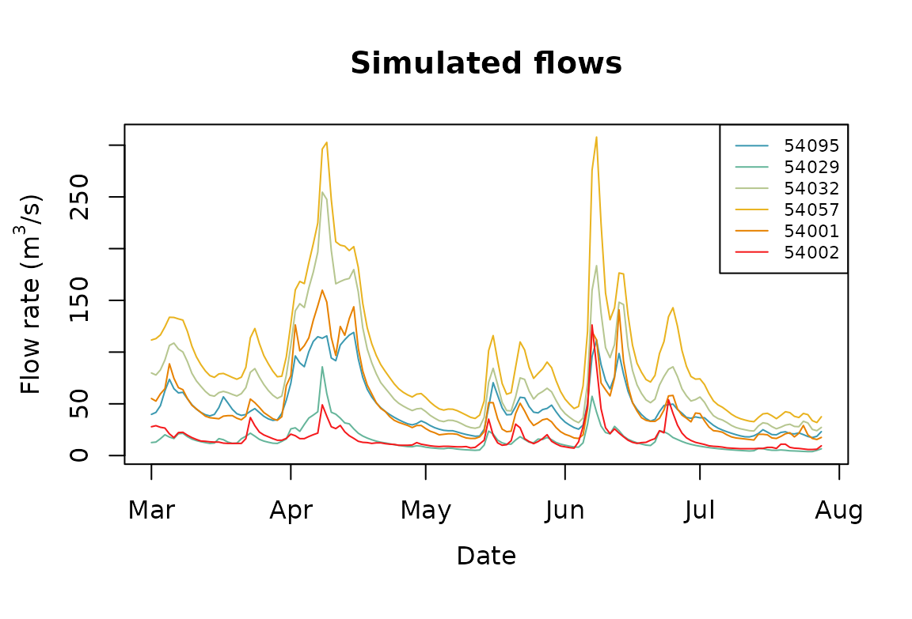

Severn_03: Calibration of an open-loop influenced flow model network
David Dorchies
Source:vignettes/V03_Open-loop_influenced_flow.Rmd
V03_Open-loop_influenced_flow.Rmd
library(airGRiwrm)
#> Loading required package: airGR
#>
#> Attaching package: 'airGRiwrm'
#> The following objects are masked from 'package:airGR':
#>
#> Calibration, CreateCalibOptions, CreateInputsCrit,
#> CreateInputsModel, CreateRunOptions, RunModelPresentation of the study case
The calibration results shown in vignette ‘V02_Calibration_SD_model’ for the flows simulated on the Avon at Evesham (Gauging station ‘54002’) and on the Severn at Buildwas (Gauging station ‘54095’) are not fully satisfactory, especially regarding low flows. These upper basins are actually heavily influenced by impoundments and inter-basin transfers (Higgs and Petts 1988).
So, to cope with these influences, in this vignette, we use direct injection of observed influenced flows instead of modeling natural flow with an hydrological model.
We use observation on the Avon at Evesham (Gauging station ‘54002’) and we choose to do the same on the Severn at Bewdley (Gauging station ‘54001’) as if the observed flow at these locations would be the observed release of a dam.
Please note that the flow on the Severn at Buildwas (Gauging station ‘54095’) is still simulated but its flows is no longer routed to downstream.
Conversion of a gauging station into a release spot
Modification of the GRiwrm object
The creation of the GRiwrm object is detailed in the
vignette “V01_Structure_SD_model” of the package. The following code
chunk resumes all the necessary steps:
data(Severn)
nodes <- Severn$BasinsInfo[, c("gauge_id", "downstream_id", "distance_downstream", "area")]
nodes$model <- "RunModel_GR4J"To notify the SD model that the provided flows on a node should be
directly used instead of an hydrological model, one only needs to
declare its model as NA:
nodes$model[nodes$gauge_id == "54002"] <- NA
nodes$model[nodes$gauge_id == "54001"] <- NA
griwrmV03 <- CreateGRiwrm(nodes, list(id = "gauge_id", down = "downstream_id", length = "distance_downstream"))
griwrmV03
#> id down length area model donor
#> 4 54095 54001 42 3722.68 RunModel_GR4J 54095
#> 6 54029 54032 32 1483.65 RunModel_GR4J 54029
#> 2 54032 54057 15 6864.88 RunModel_GR4J 54032
#> 1 54057 <NA> NA 9885.46 RunModel_GR4J 54057
#> 3 54001 54032 45 4329.90 <NA> 54001
#> 5 54002 54057 43 2207.95 <NA> 54002Here, we keep the area of this basin which means that the discharge
will be provided in mm per time step. If the discharge is provided in
m3/s, then the area should be set to NA and
downstream basin areas should be modified subsequently.
The diagram of the network structure is represented below with:
- in blue, the upstream nodes with a GR4J model
- in green, the intermediate nodes with an SD (GR4J + LAG) model
- in red, the node with direct flow injection (no hydrological model)
plot(griwrmV03)
Generation of the GRiwrmInputsModel object
The formatting of the input data is described in the vignette “V01_Structure_SD_model”. The following code chunk resumes this formatting procedure:
BasinsObs <- Severn$BasinsObs
DatesR <- BasinsObs[[1]]$DatesR
PrecipTot <- cbind(sapply(BasinsObs, function(x) {x$precipitation}))
PotEvapTot <- cbind(sapply(BasinsObs, function(x) {x$peti}))
Precip <- ConvertMeteoSD(griwrmV03, PrecipTot)
PotEvap <- ConvertMeteoSD(griwrmV03, PotEvapTot)
Qobs <- cbind(sapply(BasinsObs, function(x) {x$discharge_spec}))This time, we need to provide observed flows as inputs for the nodes ‘54002’ and ‘54095’:
QobsInputs <- Qobs[, c("54001", "54002")]Then, the GRiwrmInputsModel object can be generated
taking into account the new GRiwrm object:
IM_OL <- CreateInputsModel(griwrmV03, DatesR, Precip, PotEvap, QobsInputs)
#> CreateInputsModel.GRiwrm: Processing sub-basin 54095...
#> CreateInputsModel.GRiwrm: Processing sub-basin 54029...
#> CreateInputsModel.GRiwrm: Processing sub-basin 54032...
#> CreateInputsModel.GRiwrm: Processing sub-basin 54057...Calibration of the new model
Calibration options is detailed in vignette “V02_Calibration_SD_model”. We also apply a parameter regularization here but only where an upstream simulated catchment is available.
The following code chunk resumes this procedure:
IndPeriod_Run <- seq(
which(DatesR == (DatesR[1] + 365*24*60*60)), # Set aside warm-up period
length(DatesR) # Until the end of the time series
)
IndPeriod_WarmUp = seq(1,IndPeriod_Run[1]-1)
RunOptions <- CreateRunOptions(IM_OL,
IndPeriod_WarmUp = IndPeriod_WarmUp,
IndPeriod_Run = IndPeriod_Run)
InputsCrit <- CreateInputsCrit(IM_OL,
FUN_CRIT = ErrorCrit_KGE2,
RunOptions = RunOptions, Obs = Qobs[IndPeriod_Run,],
AprioriIds = c("54057" = "54032", "54032" = "54029"),
transfo = "sqrt", k = 0.15
)
CalibOptions <- CreateCalibOptions(IM_OL)The airGR calibration process is applied on each
hydrological node of the GRiwrm network from upstream nodes
to downstream nodes.
OC_OL <- suppressWarnings(
Calibration(IM_OL, RunOptions, InputsCrit, CalibOptions))
#> Calibration.GRiwrmInputsModel: Processing sub-basin '54095'...
#> Grid-Screening in progress (0% 20% 40% 60% 80% 100%)
#> Screening completed (81 runs)
#> Param = 247.151, -0.020, 83.096, 2.384
#> Crit. KGE2[sqrt(Q)] = 0.9507
#> Steepest-descent local search in progress
#> Calibration completed (37 iterations, 377 runs)
#> Param = 305.633, 0.061, 48.777, 2.733
#> Crit. KGE2[sqrt(Q)] = 0.9578
#> Calibration.GRiwrmInputsModel: Processing sub-basin '54029'...
#> Grid-Screening in progress (0% 20% 40% 60% 80% 100%)
#> Screening completed (81 runs)
#> Param = 247.151, -0.020, 42.098, 1.944
#> Crit. KGE2[sqrt(Q)] = 0.9541
#> Steepest-descent local search in progress
#> Calibration completed (32 iterations, 333 runs)
#> Param = 214.204, -0.119, 46.754, 2.022
#> Crit. KGE2[sqrt(Q)] = 0.9696
#> A priori parameters from node 54029: 1, 214.204, -0.119, 46.754, 1.823
#> Crit. KGE2[sqrt(Q)] = 0.9696
#> SubCrit. KGE2[sqrt(Q)] cor(sim, obs, "pearson") = 0.9697
#> SubCrit. KGE2[sqrt(Q)] cv(sim)/cv(obs) = 0.9975
#> SubCrit. KGE2[sqrt(Q)] mean(sim)/mean(obs) = 0.9989
#>
#> Calibration.GRiwrmInputsModel: Processing sub-basin '54032'...
#> Grid-Screening in progress (0% 20% 40% 60% 80% 100%)
#> Screening completed (243 runs)
#> Param = 1.250, 432.681, -0.020, 42.098, 1.944
#> Crit. Composite = 0.9861
#> Steepest-descent local search in progress
#> Calibration completed (17 iterations, 395 runs)
#> Param = 1.110, 395.440, 0.000, 60.340, 1.788
#> Crit. Composite = 0.9876
#> Formula: sum(0.85 * KGE2[sqrt(Q)], 0.15 * GAPX[ParamT])
#> A priori parameters from node 54032: 1.11, 395.44, 0, 60.34, 1.655
#> Crit. KGE2[sqrt(Q)] = 0.9913
#> SubCrit. KGE2[sqrt(Q)] cor(sim, obs, "pearson") = 0.9916
#> SubCrit. KGE2[sqrt(Q)] cv(sim)/cv(obs) = 1.0020
#> SubCrit. KGE2[sqrt(Q)] mean(sim)/mean(obs) = 1.0010
#>
#> Calibration.GRiwrmInputsModel: Processing sub-basin '54057'...
#> Grid-Screening in progress (0% 20% 40% 60% 80% 100%)
#> Screening completed (243 runs)
#> Param = 1.250, 247.151, -0.020, 42.098, 1.944
#> Crit. Composite = 0.9786
#> Steepest-descent local search in progress
#> Calibration completed (23 iterations, 452 runs)
#> Param = 1.120, 230.442, -0.242, 42.521, 1.710
#> Crit. Composite = 0.9797
#> Formula: sum(0.85 * KGE2[sqrt(Q)], 0.15 * GAPX[ParamT])
ParamV03 <- sapply(griwrmV03$id, function(x) {OC_OL[[x]]$Param})Run of the model with this newly calibrated parameters
OM_OL <- RunModel(
IM_OL,
RunOptions = RunOptions,
Param = ParamV03
)
#> RunModel.GRiwrmInputsModel: Processing sub-basin 54095...
#> RunModel.GRiwrmInputsModel: Processing sub-basin 54029...
#> RunModel.GRiwrmInputsModel: Processing sub-basin 54032...
#> RunModel.GRiwrmInputsModel: Processing sub-basin 54057...Plotting of the results
As can be seen below, compared to results of vignette “V02_Calibration_SD_model”, the use of measured flows on upstream influenced basins largely improves the model performance at downstream stations (better low-flow simulations).
plot(OM_OL, Qobs = Qobs[IndPeriod_Run, ], which = "Regime")
The resulting flows of each node in m3/s are directly available and can be plotted with these commands:
